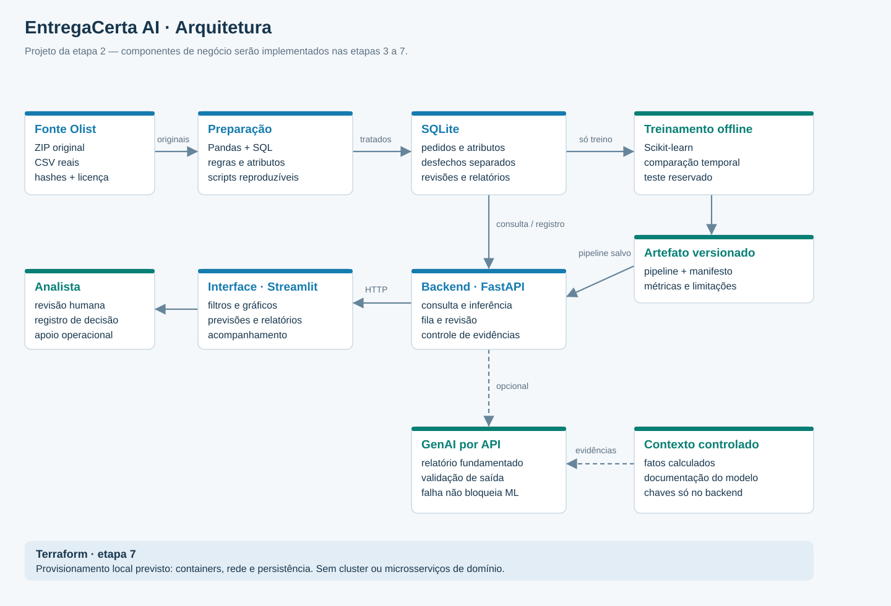
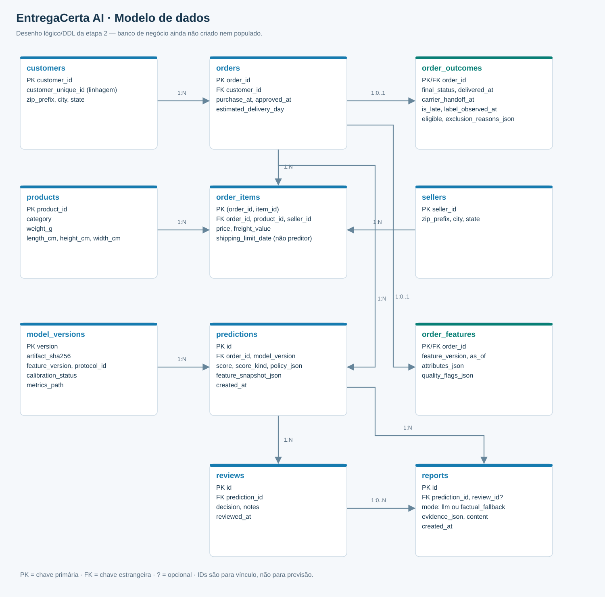

Arquitetura planejada
Componentes previstos; dados tratados, ML, GenAI e aplicação serão implementados nas próximas etapas.

Modelo de dados planejado
Desfechos observados separados dos atributos disponíveis na aprovação. O banco será criado e populado na etapa 3.

Processo de acompanhamento · BPMN 2.0
Modelo documental, não executável por motor BPMN. Pode ser editado nesta prévia e em modeladores compatíveis.
Carregando BPMN…